Anonymous visitor
Private from the first screen
Books has no account gate: an anonymous visitor starts with a local, empty library and a clear statement of what stays on this device.
Books · visual product guide
The modern take is not “Calibre in a browser.” Books helps you read, understand, connect, and remember what is inside—without taking ownership away from you.
Try “AI”, “notes”, “storage”, “Native”, or a reader context.
01
Books is useful before sign-in because there is no sign-in. The browser is the private boundary.
Anonymous visitor
Books has no account gate: an anonymous visitor starts with a local, empty library and a clear statement of what stays on this device.
02
The first-run path explains both the fastest start and the more durable folder-backed library.
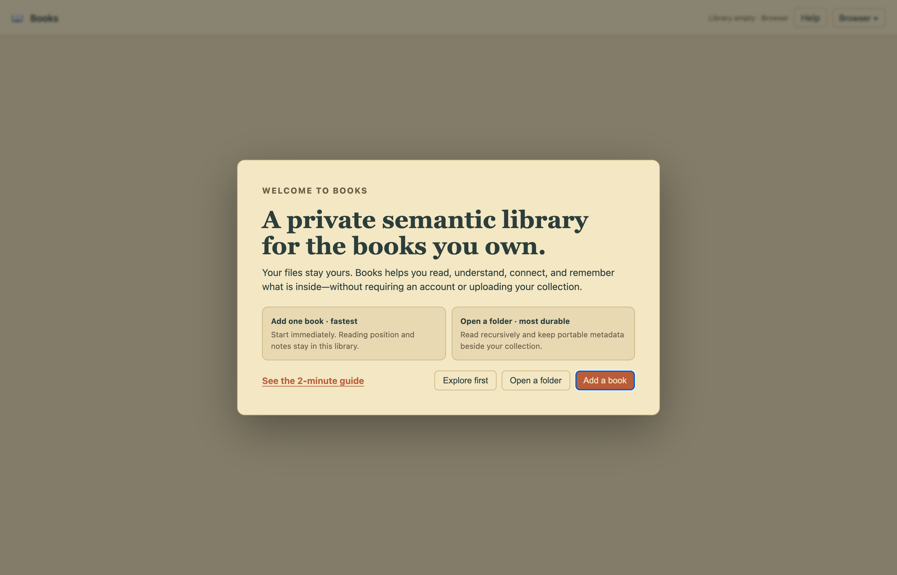
Brand-new reader
Start with individual files, drag-and-drop, or grant a folder so Books can discover supported formats recursively.
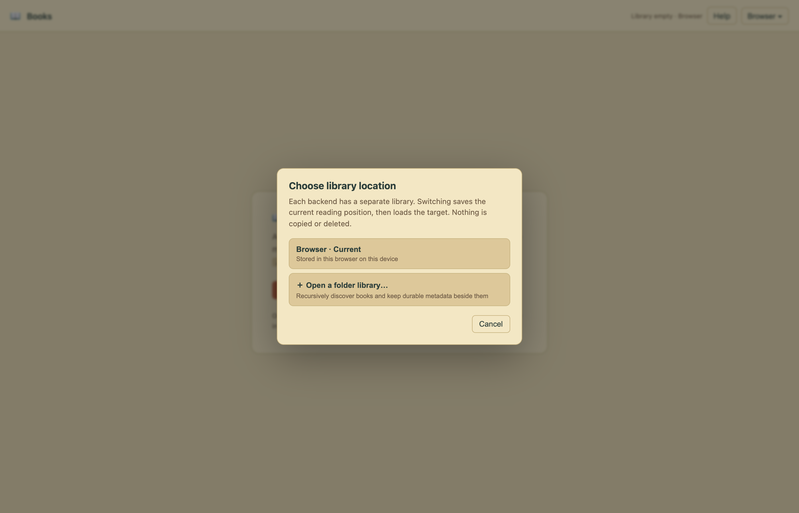
Brand-new reader
Browser storage, a durable Folder sidecar, and NakliOS storage remain explicit, isolated libraries—switching never silently copies or deletes.
03
Once populated, the collection becomes an active private knowledge space rather than a grid of inert files.
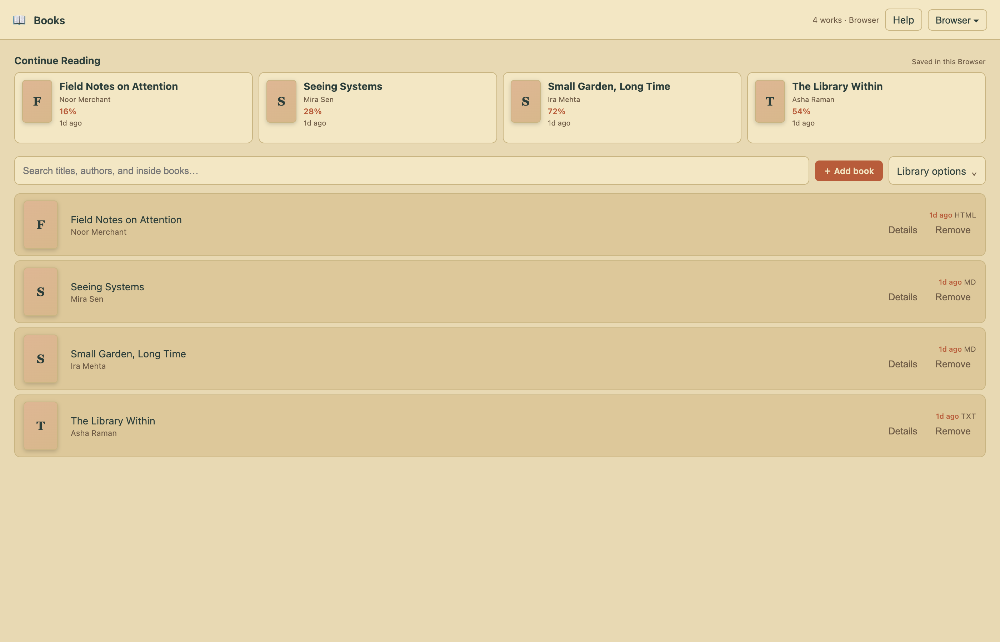
Library owner
Continue Reading, one search, and Add lead; saved views and library-wide maintenance stay one deliberate step away.
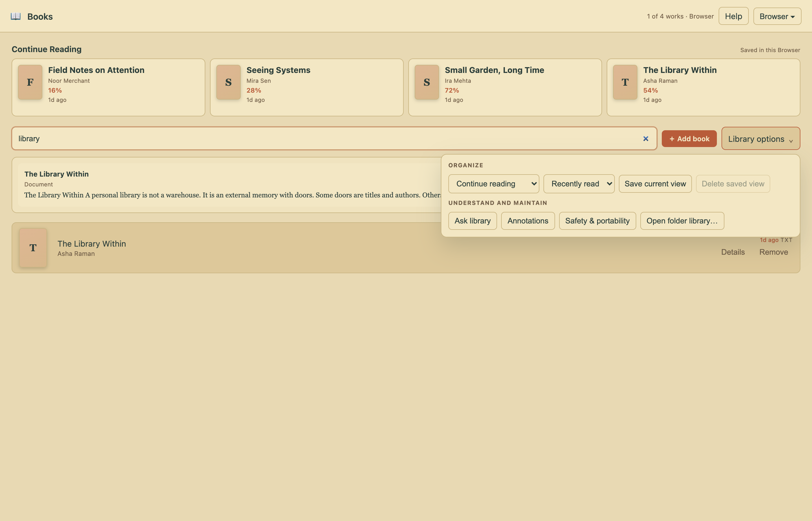
Library owner
Combine reading state, shelves, tags, text filtering, and sort order, then save that view inside the active library.
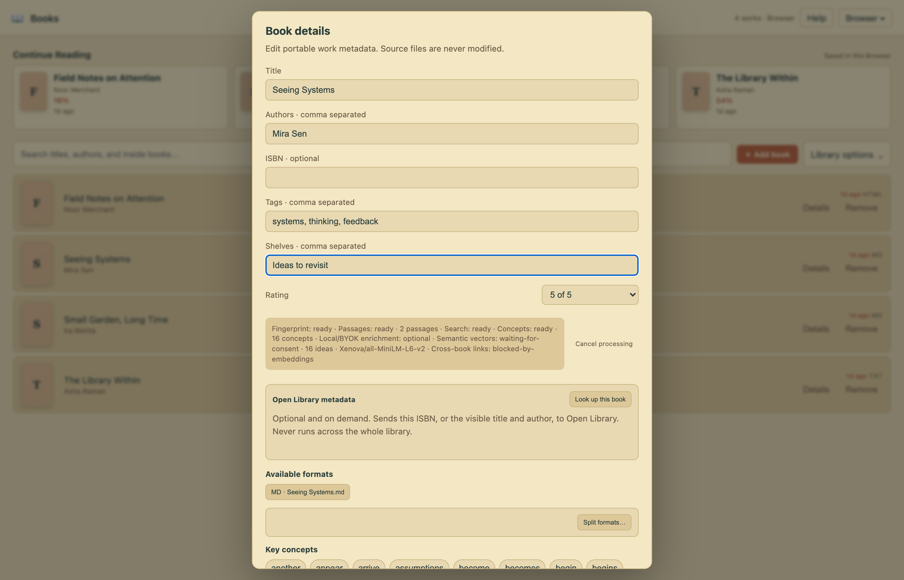
Library owner
Edit title, authors, ISBN, tags, shelves, rating, formats, concepts, and processing state without modifying the original book.
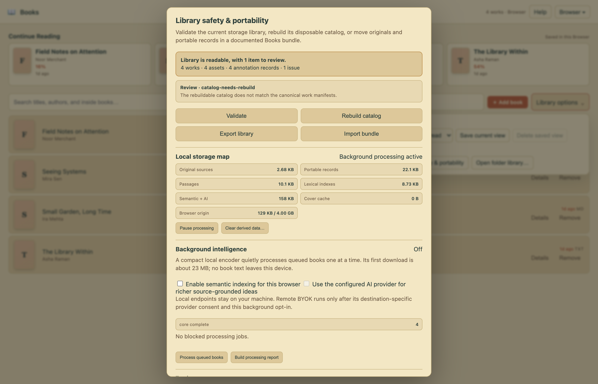
Library owner
Validate canonical records, rebuild disposable indexes, export a portable library, inspect background work, and recover books from Trash.
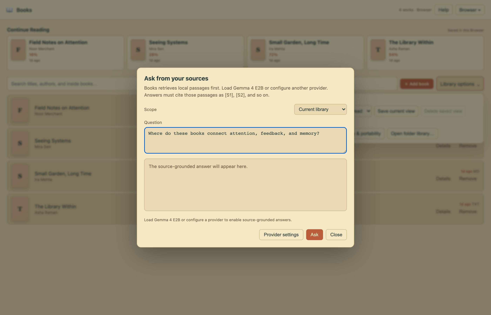
Library owner
Books retrieves passages locally first and requires the answer to cite the exact excerpts supplied to the chosen provider.
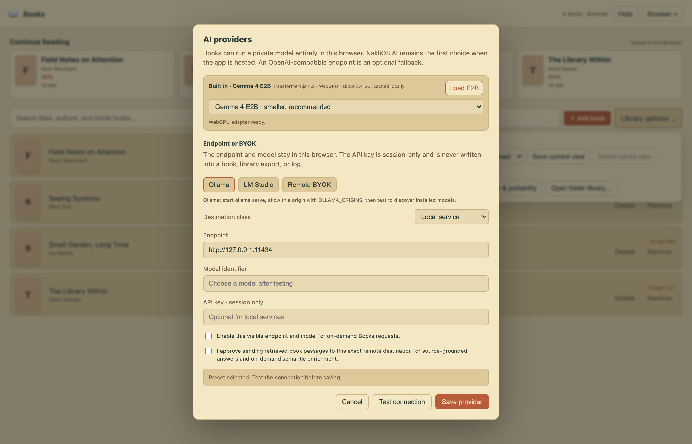
Library owner
Use the built-in on-device model, Ollama, LM Studio, or an explicit remote endpoint with session-only keys and destination-specific consent.
04
The reading surfaces keep source fidelity, personal memory, reflow, and optional assistance in one continuous workspace.
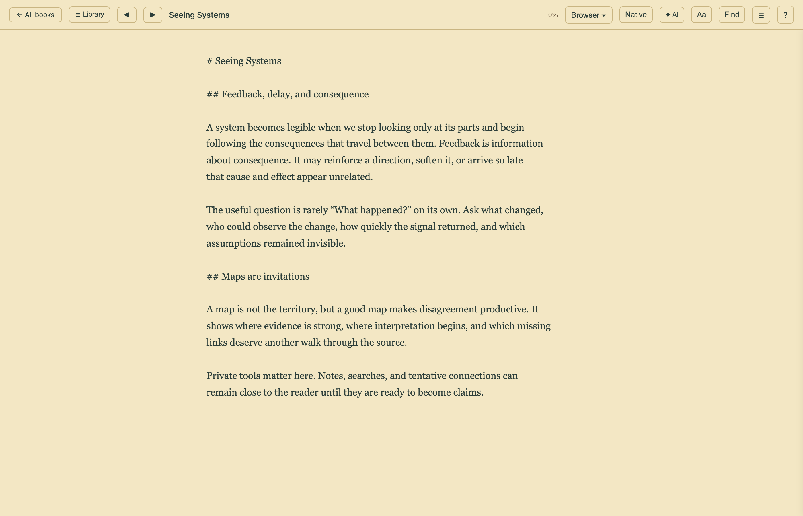
Active reader
The primary reader preserves the book’s own structure on a full canvas while keeping the library available from the top bar.
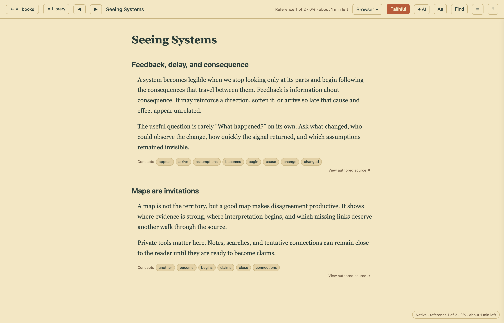
Active reader
Native mode reflows indexed passages into an accessible reading surface with stable references and source-grounded concepts.
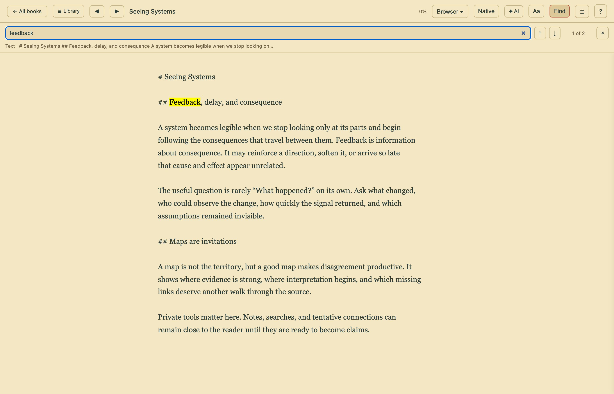
Active reader
Find in book uses engine-aware anchors for EPUB, PDF, and reflowable text while retaining a common keyboard and result interface.
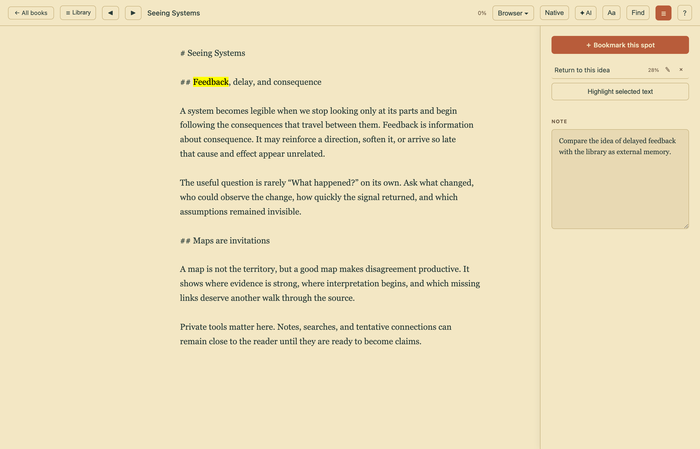
Active reader
Bookmarks, portable highlights, a table of contents, and per-book notes stay attached to the source and survive derived-index rebuilds.
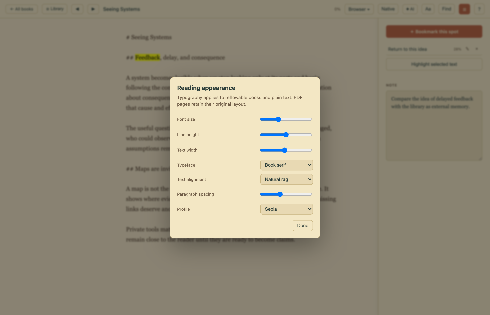
Active reader
Adjust typeface, size, rhythm, width, alignment, spacing, and colour profile without changing the book itself.
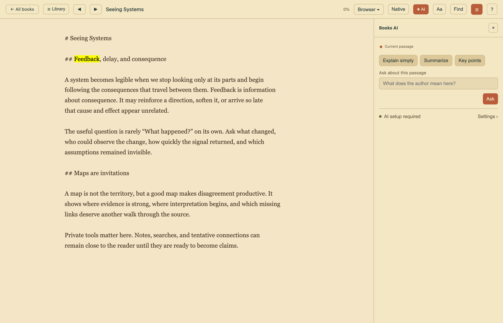
Active reader
Explain, summarize, extract key points, or ask a question about the current passage without turning AI into a blocking reader modal.
05
Inside NakliOS, Books adopts host capabilities without losing the standalone product or crossing storage boundaries.
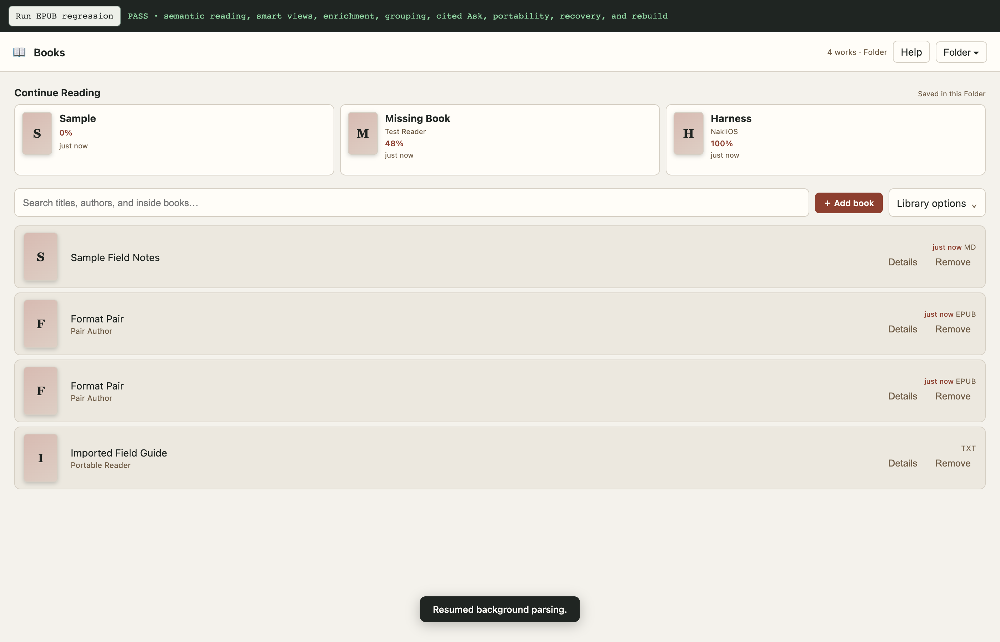
NakliOS reader
Books keeps its standalone reading model when hosted, while storage, theme, and AI capabilities arrive through the NakliOS boundary.
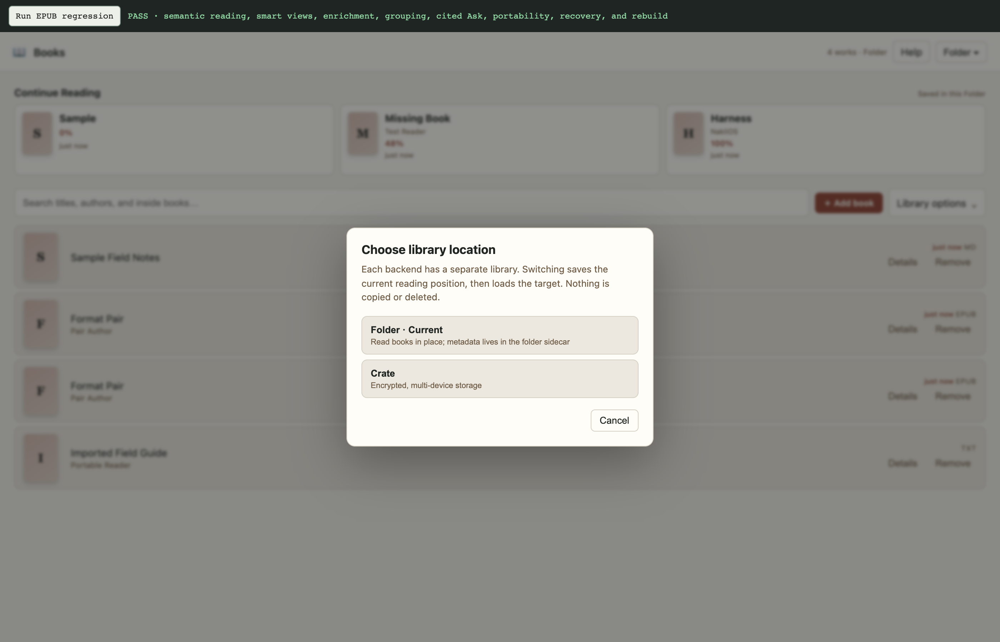
NakliOS reader
Hosted readers can switch between connected backends after pending reading state is saved; neither library is merged implicitly.
{kind=link}
{kind=link}
{kind=link}
{kind=link}
{kind=link}
{kind=link}
{kind=link}
{kind=link}
{kind=link}
{kind=link}
{kind=link}
{kind=link}
{kind=link}
{kind=link}
{kind=link}
{kind=link}